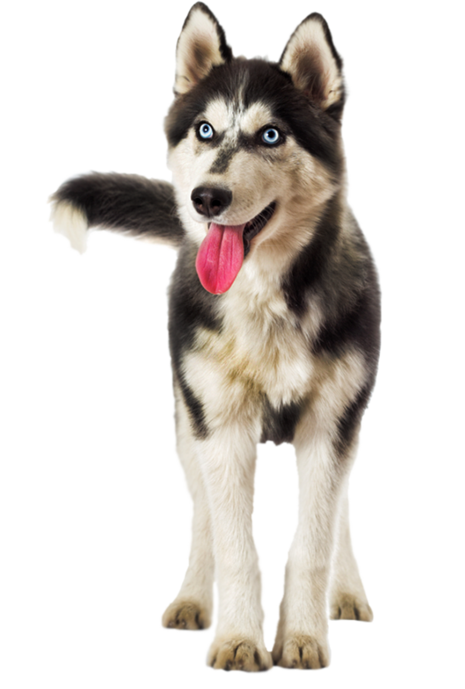

Un perro definitivamente necesita tener su propia cama. El hecho de que duerma en lu cama junto a ti, aumenta el apego existente entre tu perro y tú y lo hará mucho más dependiente.
Amigos perrunos y gatunos
Fundación para la protección de animales.

Bienvenidos a la fundación Mascotitas
Ha trabajado desde el año 2015, en el rescate de perros y gatos de la calle y victimas de maltratos en sus antiguos hogares; Su misión es la de velar por el bienestar de perros y gatos abandonadas y violentados, por medio de rescate y búsqueda de hogares temporales y permanentes para los animales en la ciudad de Cali.
Amor y cuidado
El futuro de las mascotas es muy importante para nosotros, por eso desde la educación temprana estamos promoviendo la tenencia responsable de nuestras mascotas.
Prevenir el maltrato animal
Por medio de actividades de educación no formal para sensibilizar a la ciudadanía, sobre el respeto por los animales.
Campañas
Realizamos campañas de esterilización, vacunación y desparasitación, para el bienestar y la calidad de vida de las mascotas.
Acerca de nosotros
Somos una organización que busca contribuir activamente con el mejoramiento continuo en la calidad de vida de éstos seres maravillosos.
El programa de adopciones es uno de los más importantes de la Fundación mascotitas, a diario llegan a la Unidad de Cuidado Animal, perros y gatos víctimas de maltrato o abandono, o atendidos por el equipo de Urgencias Veterinarias.
Los requisitos para adoptar un animal de compañía son:
- Ser mayor de edad y presentar copia del documento de identidad.
- Si adopta un perro, llevar correa, bozal si el animal es de raza fuerte.
- Disponer de tiempo para asistir a una entrevista y conocer sobre la adopción responsable.
Nuestros Veterinarios
Estamos listos para servirte, amamos a tu mascotas tanto como tú lo haces.
Yesica Ocoro
Medica Veterinaria y Zootecnista, egresada de la Universidad Del Tolima . Especialista en clínica medica de Pequeños Animales de la Universidad de Buenos Aires (UBA).
Valeria Campo
Médica Veterinario y Zootecnista, Universidad del Tolima . Diplomado en clínica Médica y Quirúrgica de pequeños animales, Magister en Ciencias Veterinarias con énfasis en Medicina interna.
Viviana Gutierrez
Medica veterinaria zootecnista egresada de la universidad del Tolima con diplomada en Clínica de pequeños animales por la universidad del Tolima.
Adopciones y rescates
Hemos cambiado su mundo y ellos el nuestro, muchos han sido felizmente adoptados, otros nos han enseñado a no darnos por vencidos.
Nuestros
Eventos
- Gran reciclatón profondos.
- Conversatorio "Victimas de maltrato animal".
- Educacion cuidado de mascotas.
- Rescate animal.
- Alimentalos bien!.
Nuestra
Gestión
- Más de 3.020 esterilizaciones.
- Más de 5.841 rescates.
- 3.214 se le han encontrado hogar.
- Creación de 20 brigadas promascotas.
- 1.000 capacitaciones "Ama tu mascota".
Conviertete
En voluntario
- Busca qué causa te interesa.
- Ten en cuenta las habilidades que posees.
- Combina tus propios objetivos.
- Preparaté para crecer personalmente.
- Entrega tu corazón y ganas
PREGUNTAS FRECUENTES
Si amas los animales, no te puedes perder este espacio, en el que En esta bitácora puedes aprender trucos y consejos para disfrutar como nunca de la compañía de tu mascota.

¿Está bien vestir a tu perro?.
Los especialistas en animales sugieren que la ropa para perros solo es necesaria como abrigo en algunos casos específicos. Si hace mucho frío, entonces, se debe considerar utilizarla para: Perros de pelo corto y poco abundante. Cachorros o animales ancianos, que pueden ser más vulnerables a las bajas temperaturas.
¿Por qué a los perros les gusta que les rasquen la barriga?.
“Los perros exponen sus panzas como parte de una muestra de sumisión, en ocasiones al jugar, y con las personas con las que se sienten cómodos”.
¿Una nariz seca significa un perro enfermo?.
Muchos dueños preocupados se preguntan si una nariz seca significa un perro ... las que su perro puede tener la nariz seca y caliente que no tienen nada que ver con ... Si su perro tiene la nariz seca y roja o si la piel de la nariz se descama, ... Agotamiento por calor en perros: Signos de que tu perro está sobrecalentado.
Testimonios
Que bueno y muchas gracias a Uds, esta gran fundación por su esfuerzo de procurar por el bienestar de nuestros animalitos, felicidades y muchas bendiciones.

Guillermo Fernandez
Listo ya hice mi aporte para esta perrita bu si baby, ténganos al tanto de su situación, deseo seguir aportando con la causa.

Carlos Mejía
Dios bendiga el buen corazón, a quienes se van hacer cargo, de las mascotas en su rehabilitación, que Dios les va ha bendecir grandemente.

Maria Trujillo
Para todos aquellos que quieren adoptar sin hacer trámites, esta es la manera más fácil y gratificante. Todos podemos adoptar, porque querer es poder hacerlo.

Roberto Pelaez
Galeria de fotos


Mascotitas Blog
Seguro que te gusta estar al día de novedades y curiosidades sobre el mundo de las mascotas. Además del blog de Mascotitas Saludables, donde podrás encontrar noticias curiosas, información útil y artículos muy interesantes relacionados con el cuidado de perros y gatos.
Puedes ser un hogar de paso para los animales.
Si su respuesta es sí, su casa puede servir de hogar de paso para estos animales.
Los perros más famosos de Instagram que deberías seguir
Instagram es una red social ideal para seguir las andanzas de las mascotas más divertidas y adorables.
Las mascotas más pequeñas del mundo
En esta ocasión queremos centrarnos en las mascotas más pequeñas del mundo. Son muy adorables y perfectas como mascotas para niños y mayores.
Caída del pelo del perro – causas, síntomas y tratamiento.
Si notas que tu perro está perdiendo pelo o tiene algunos lados sin pelo en su cuerpo, tienes que preocuparte.
Nuestros Servicios
Somos una entidad sin ánimo de lucro, que busca generar un impacto en la sociedad ayudando a controlar las poblaciones caninas y felinas, proporcionando una vida larga, saludable y tranquila para tus mascotas. Te invitamos a conocer nuestro portafolio de servicios, los cuales han sido diseñados para estar al alcance de toda la comunidad.

Chequeo del perro
Es un servicio que se presta para Caninos, Felinos y Equinos, bajo convenios con diferentes secretarías de salud, para lo cual la Fundación cuenta con una sede campestre.

Centros de Esterilización
El centro de esterilización se enfoca en ofrecer cirugías para el control reproductivo de la fauna urbana, con un proceso de alta calidad y a bajo costo para la comunidad.

Vacunación Antirrábica permanente
Ayudamos con la prevención de la rabia, a través de vacunación permanente en el municipio de Florida, Valle del Cauca.

Unidad Móvil Quirúrgica Canina – Felina
El empleo de esta unidad, ha incrementado el alcance de las campañas de esterilización entre las poblaciones rurales del Valle del Cauca.

Programas Educativos en Prevención y Control de Enfermedades Zoonóticas
Estos programas de educación abarcan temas como la Tenencia Responsable de Mascotas, control poblacional animal, control de residuos sólidos, etc.

Personal Altamente Calificado
Sabemos que tu mascota es un miembro de la familia, por eso nos aseguramos de que nuestro personal sea idóneo para el manejo clínico de pequeños animales. Contamos con médicos veterinarios con amplia trayectoria y altamente calificados.
Contáctanos
-
Dirección:
Santiago de Cali - Valle del Cauca, Colombia
-
Teléfono:
+(000) 123 4567 89
-
Correo electrónico:
info@mascotitas.com
-

Nuestra regla número 1, es Ayudar.